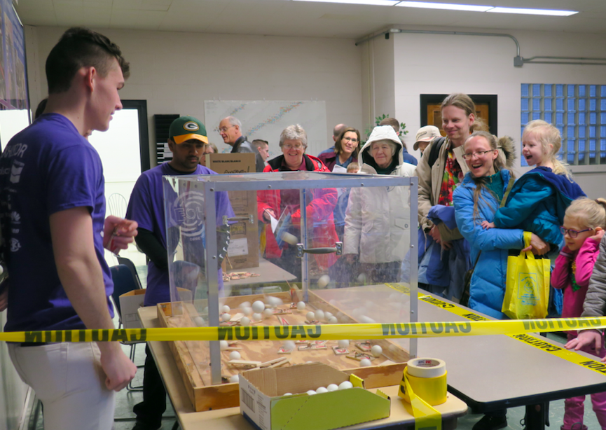
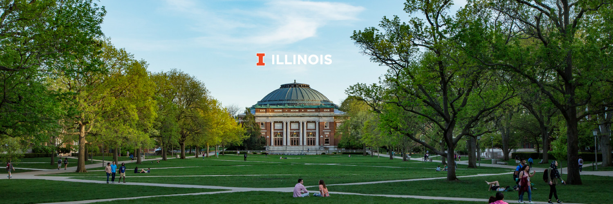

Annual Student Conference 2022
We in the American Nuclear Society and Department of Nuclear, Plasma, and Radiological Engineering at the University of Illinois Urbana-Champaign eagerly look forward to welcoming students, professionals, and the future leaders in nuclear science and technology at the 2022 ANS Student Conference in Urbana-Champaign, Illinois. The future is nuclear. There are many grand challenges facing the world today and some have been designated existential threats to humanity. Young people today will witness the growing toll of anthropogenic climate change. The ANS Student Conference is an opportunity for students and professionals to come together and share advances in critical technology and research dedicated to solving problems of our time.
Nuclear, plasma, and radiological engineering will be central to many endeavors, whether the goal is solving the world’s energy needs, developing technology that will take us to the stars, or curing cancer. By hosting this conference, we hope to inspire and motivate students in these engineering fields to tackle big problems. Saving the World One Atom at a Time reflects the fact that nuclear science is a powerful force in dealing with grand challenge problems. This conference is about science and engineering and it is about the people that make science and engineering possible.Event Speakers
Learn more about our speakers by visiting their Social Media pages, and through our Speakers page.

ANS in the UIUC Community
The ANS-UIUC maintains and develops a cohesive community of students in nuclear science related fields of study. It also engages in education and outreach programs to teach members of the surrounding community about nuclear science. One of our most popular outreach programs is Engineering Open House (EOH), an annual event where members of the local community visit the engineering campus to learn more about STEM research in Illinois.
The chapter works to host events catering to nuclear, plasma, and radiological concentrations. Professional development plays a crucial role in student development, and it is the biggest part of member involvement at UIUC. Professional development activities range from tours of various facilities to pizza with campus visitors. Some of the past tours have included Clinton Power Station, Curium Pharma through UIUC Women In Nuclear, Oak Ridge National Laboratory, Analysis System (ANSYS) Inc, and Argonne National Laboratory. ANS-UIUC has historically been one of the best represented institutions at the annual student conference and hosting it is a tradition this chapter is eager to uphold.
